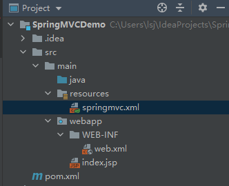
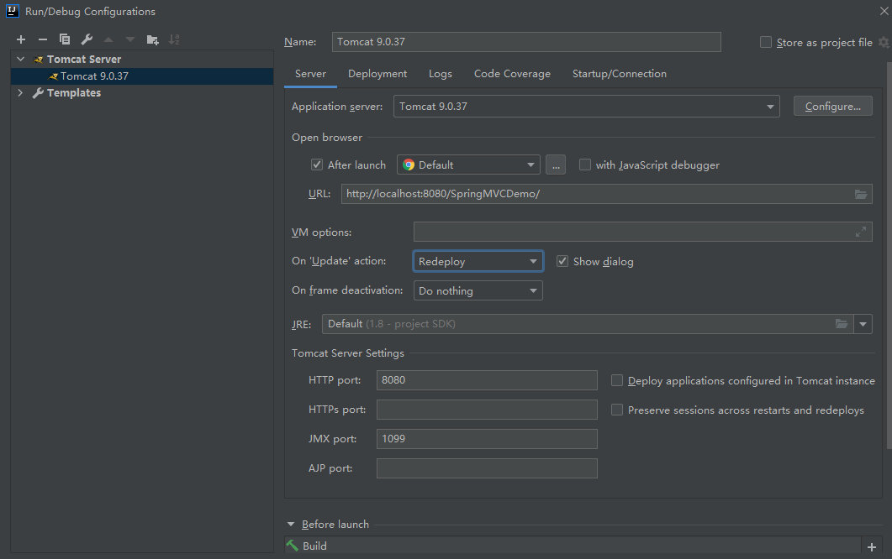
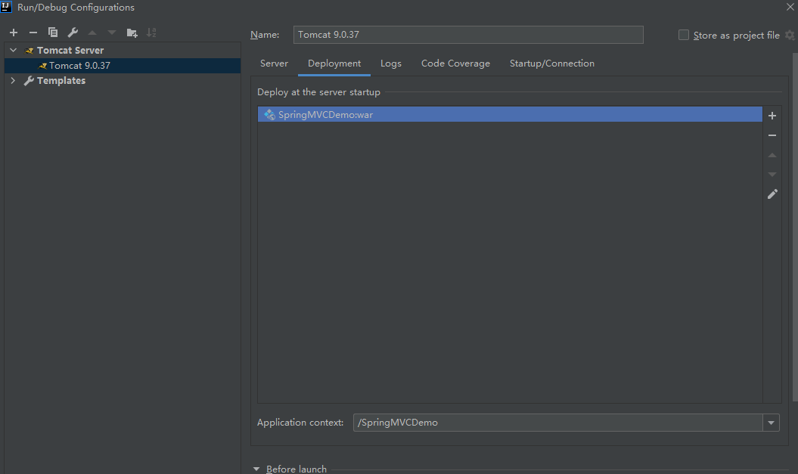
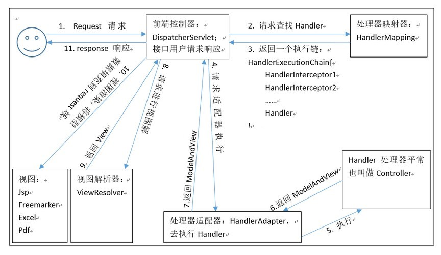

B/S三层架构与MVC模型
三层架构
- 表现层：WEB层，用来和客户端进行数据交互。表现层一般会采用MVC的设计模型 。
- 业务层：处理公司具体的业务逻辑 。
- 持久层：用来操作数据库。
MVC模型
- MVC全名是Model View Controller 模型视图控制器，每个部分各司其职。
- Model：数据模型，JavaBean的类，用来进行数据封装。
- View：指JSP、HTML用来展示数据给用户。
- Controller：用来接收用户的请求，整个流程的控制器。用来进行数据校验等。
环境搭建
选择原型
maven-archetype-webapp，创建工程。补全工程目录结构如下：

导入maven依赖：
1
2
3
4
5
6
7
8
9
10
11
12
13
14
15
16
17
18
19
20
21
22
23
24
25
26
27
28
29
30
31
32
33
34
35
36
37
38
39
40<properties>
<project.build.sourceEncoding>UTF-8</project.build.sourceEncoding>
<maven.compiler.source>1.8</maven.compiler.source>
<maven.compiler.target>1.8</maven.compiler.target>
<spring.version>5.2.5.RELEASE</spring.version>
</properties>
<dependencies>
<dependency>
<groupId>org.springframework</groupId>
<artifactId>spring-context</artifactId>
<version>${spring.version}</version>
</dependency>
<dependency>
<groupId>org.springframework</groupId>
<artifactId>spring-web</artifactId>
<version>${spring.version}</version>
</dependency>
<dependency>
<groupId>org.springframework</groupId>
<artifactId>spring-webmvc</artifactId>
<version>${spring.version}</version>
</dependency>
<dependency>
<groupId>javax.servlet</groupId>
<artifactId>servlet-api</artifactId>
<version>2.5</version>
<scope>provided</scope>
</dependency>
<dependency>
<groupId>javax.servlet.jsp</groupId>
<artifactId>jsp-api</artifactId>
<version>2.0</version>
<scope>provided</scope>
</dependency>
</dependencies>在
web.xml中配置Servlet控制器：1
2
3
4
5
6
7
8
9<servlet>
<servlet-name>dispatcherServlet</servlet-name>
<servlet-class>org.springframework.web.servlet.DispatcherServlet</servlet-class>
</servlet>
<servlet-mapping>
<servlet-name>dispatcherServlet</servlet-name>
<url-pattern>/</url-pattern>
</servlet-mapping>配置tomcat服务器：


web路径：不以/开始的相对路径，以当前资源所在目录为基准；以/开始的相对路径，以服务器的路径（http://localhost:3306）为基准。可通过设置服务器路径到变量APP_PATH：
1 | <% pageContext.setAttribute("APP_PATH", request.getContextPath()); %> |
然后通过${APP_PATH}/某路径来设置路径。
简单案例
案例代码
配置DispatcherServlet(前端控制器)
1
2
3
4
5
6
7
8
9
10
11
12
13
14
15
16
17
18
19
20<web-app>
<display-name>Archetype Created Web Application</display-name>
<servlet>
<servlet-name>dispatcherServlet</servlet-name>
<servlet-class>org.springframework.web.servlet.DispatcherServlet</servlet-class>
<!--加载spring配置文件并创建IoC容器-->
<init-param>
<param-name>contextConfigLocation</param-name>
<param-value>classpath:springmvc.xml</param-value>
</init-param>
<!--Tomcat启动时加载DispatcherServlet-->
<load-on-startup>1</load-on-startup>
</servlet>
<servlet-mapping>
<servlet-name>dispatcherServlet</servlet-name>
<url-pattern>/</url-pattern><!--拦截所有请求-->
</servlet-mapping>
</web-app>配置springmvc.xml
1
2
3
4
5
6
7
8
9
10
11
12
13
14
15
16
17
18
19
20
21
22
23
24
25
<beans xmlns="http://www.springframework.org/schema/beans"
xmlns:mvc="http://www.springframework.org/schema/mvc"
xmlns:context="http://www.springframework.org/schema/context"
xmlns:xsi="http://www.w3.org/2001/XMLSchema-instance"
xsi:schemaLocation="
http://www.springframework.org/schema/beans
https://www.springframework.org/schema/beans/spring-beans.xsd
http://www.springframework.org/schema/context
https://www.springframework.org/schema/context/spring-context.xsd
http://www.springframework.org/schema/mvc
https://www.springframework.org/schema/mvc/spring-mvc.xsd">
<context:component-scan base-package="org.example"></context:component-scan>
<!--创建视图解析器对象-->
<bean id="internalResourceViewResolver" class="org.springframework.web.servlet.view.InternalResourceViewResolver">
<property name="prefix" value="/WEB-INF/pages/"></property>
<property name="suffix" value=".jsp"></property>
</bean>
<!--开启SpringMVC框架注解的支持-->
<!--使用该标签自动加载RequestMappingHandlerMapping和RequestMappingHandlerAdapter-->
<mvc:annotation-driven></mvc:annotation-driven>
</beans>编写index.jsp和HelloController控制器类
1
2
3
4<body>
<h3>入门案例</h3>
<a href="hello">入门案例</a>
</body>1
2
3
4
5
6
7
8
9
public class HelloController {
(path = "/hello")
public String hello(){
System.out.println("hello world!");
return "success";
}
}在WEB-INF目录下创建pages目录，编写success.jsp页面
1
2
3<body>
<h3>Success!</h3>
</body>启动Tomcat测试
简单案例的执行流程
- 当启动Tomcat服务器的时候，因为配置了load-on-startup标签，所以会创建DispatcherServlet对象， 就会加载springmvc.xml配置文件。
- 开启了注解扫描，那么HelloController对象就会被创建，另外springmvc.xml中配置的InternalResourceViewResolver也会被创建，这两个对象进入IoC容器。
- 从index.jsp发送请求，请求会先到达DispatcherServlet核心控制器，根据配置@RequestMapping注解找到执行的具体方法。
- 根据执行方法的返回值，再根据配置的视图解析器，去指定的目录下查找指定名称的JSP文件 。
- Tomcat服务器渲染页面，做出响应。
Spring MVC九大组件

用户请求到达dispatcherServlet，它就相当于 mvc 模式中的 c，dispatcherServlet是整个流程控制的中心，由它调用其它组件处理用户的请求，dispatcherServlet 的存在降低了组件之间的耦合性。Handler即我们编写的Controller类，由 dispatcherServlet把用户请求转发到 Handler， Handler再对具体的用户请求进行处理。
HandlerMapping
处理器映射器。HandlerMapping 负责根据用户请求URI找到 Handler 即处理器，SpringMVC 提供了不同的映射器实现不同的映射方式，例如：配置文件方式，实现接口方式，注解方式等。
HandlerAdapters
处理器适配器。通过 HandlerAdapter对处理器进行执行，这是适配器模式的应用，通过扩展适配器可以对更多类型的处理器进行执行。
ViewResolver
视图处理器。ViewResolver负责将处理结果生成 View 视图，ViewResolver 首先根据逻辑视图名解析成物理视图名，即具体的页面地址，再生成 View视图对象，最后对View进行渲染将处理结果通过页面展示给用户。
HandlerExceptionResolver
异常处理器。
MultipartResolver
文件处理器，用于处理上传的文件。
LocaleResolver
当前环境处理器。这就相当于配置数据库的方言一样，有了这个就可以对不同区域的用户显示不同的结果。SpringMVC主要有两个地方用到了Locale：一是ViewResolver视图解析的时候；二是用到国际化资源或者主题的时候。
ThemeResolver
主题处理器，用于解析主题。SpringMVC中一个主题对应一个properties文件，里面存放着跟当前主题相关的所有资源，如图片、css样式等。
RequestToViewNameTranslator
视图名称翻译器。有的Handler处理完后并没有设置View也没有设置ViewName，这时就需要从request获取ViewName了，如何从request中获取ViewName就是RequestToViewNameTranslator要做的事情了。
FlashMapManager
参数传递管理器。用于管理FlashMap，FlashMap主要用在redirect重定向中传递参数。
请求参数的绑定
基本数据类型与字符串对象的绑定
要求前端页面的参数名称必须和控制器中方法的形参名称保持一致。(严格区分大小写)
前端页面代码：
1 | <a href="account/findAccount?accountId=10&accountName=zhangsan">查询账户</a> |
控制器代码：
1 | ("/findAccount") |
POJO类及其关联类对象的绑定
要求表单中参数名称和 POJO 类的属性名称保持一致。并且控制器方法的参数类型是 POJO 类型。
POJO类代码：
1 | public class Account implements Serializable { |
jsp代码：
1 | <form action="account/saveAccount" method="post"> |
控制器代码：
1 | ("/saveAccount") |
集合类型对象的绑定
- 要求集合类型的请求参数必须在 POJO 中。在表单中请求参数名称要和 POJO 中集合属性名称相同。 给 List 集合中的元素赋值，使用下标。 给 Map 集合中的元素赋值，使用键值对。
- 接收的请求参数是 json 格式数据。需要借助注解@RequestParam或@RequestBody实现。
pojo类包含集合类型：
1 | public class User implements Serializable { |
jsp代码：
1 | <form action="account/updateAccount" method="post"> |
控制器代码：
1 | ("/updateAccount") |
请求参数中文乱码解决
POST请求方式
在web.xml中配置过滤器来转换请求数据的编码。
1 | <filter> |
在 springmvc的配置文件中可以配置，静态资源不过滤：
1 | <!-- location 表示路径，mapping 表示文件，**表示该目录下的文件以及子目录的文件 --> |
GET请求方式
Tomacat 对 GET 和 POST 请求处理方式是不同的，GET 请求的编码问题，要改 Tomcat 的 server.xml 配置文件：
1 | <Connector connectionTimeout="20000" port="8080" protocol="HTTP/1.1" redirectPort="8443" |
如果遇到 ajax 请求仍然乱码，把 useBodyEncodingForURI=”true”改为 URIEncoding=”UTF-8”即可。
自定义类型转换器
表单提交的任何数据类型全部都是字符串类型，假如后台定义Integer类型，数据也可以封装上，说明 Spring框架内部会默认进行数据类型转换。
如果想自定义数据类型转换，可以实现Converter接口并重写convert方法。比如表单提交”2020/11/11”，Spring可以正常转换为Date类型，但是表单提交的是”2020-11-11”，这时就需要我们自定义类型转换器了：
1 | import java.text.DateFormat; |
在springmvc.xml中配置StringToDateConverter对象：
1 | <!--创建类型转换器工厂--> |
在控制器中使用原生的ServletAPI
在控制器的方法参数中使用HttpServletRequest、HttpServletResponse、HttpSession等即可。
常用注解
@RequestMapping
- 作用：是建立请求URL和处理方法之间的对应关系。
- 属性
- path/value: 指定请求路径的url
- method: 指定该方法的请求方式（post,get…）
- headers: 发送的请求中必须包含请求头
- params: 限制请求参数的条件，它支持简单的表达式，要求请求参数的 key和value 必须和配置的一模一样。例如： params = {“accountName”}，表示请求参数必须有 accountName；params = {“moeny!100”}，表示请求参数中 money 不能是 100。
- RequestMapping注解可以作用在方法和类上：作用在类上，path属性表示第一级的访问目录；作用在方法上，path属性表示第二级的访问目录。
@RequestParam
- 作用：作用于参数。把请求中指定名称的参数给控制器中的形参赋值。
属性
- value/name: 请求参数中的名称。
- required：请求参数中是否必须提供此参数。默认值：true。表示必须提供，如果不提供将报错。
示例
jsp代码：
1
<a href="springmvc/useRequestParam?name=test">requestParam 注解</a>
控制器代码：
1
2
3
4
5
6("/useRequestParam")
public String useRequestParam(@RequestParam("name")String username,
@RequestParam(value="age",required=false)Integer age){
System.out.println(username+","+age);
return "success";
}
@RequestBody
- 作用：作用于参数。用于获取请求体内容，并将其绑定到Bean上或者分别绑定到对应的变量上。直接使用得到是 key=value&key=value…结构的数据。 get 请求方式不适用。
- 属性：required。是否必须有请求体。默认值是：true。当取值为 true 时，get 请求方式会报错。如果取值 为 false，get 请求得到的是 null。
@PathVarible
作用：作用于参数。用于绑定 url 中的占位符。例如：请求 url 中 /delete/{id}，这个{id}就是 url 占位符。 url 支持占位符是 spring3.0 之后加入的。是 springmvc 支持 rest 风格 URL 的一个重要标志。
属性
- value/name：指定url中占位符名称。
- required：请求url中是否必须提供占位符。
示例
jsp代码：
1
<a href="springmvc/usePathVariable/100">pathVariable 注解</a>
控制器代码：
1
2
3
4
5("/usePathVariable/{id}")
public String usePathVariable(@PathVariable("id") Integer id){
System.out.println(id);
return "success";
}RESTful编程风格
- HTTP 协议里，四个表示操作方式的动词：GET 、POST 、PUT、 DELETE。它们分别对应四种基本操作：GET 用来获取资源，POST 用来新建资源，PUT 用来更新资源，DELETE 用来 删除资源。
@RestController：创建处理http请求的对象。Spring4之后加入的注解，原来在@Controller中返回json需要@ResponseBody来配合，如果直接用@RestController替代@Controller就不需要再配置@ResponseBody，默认返回json格式。- RESTful在SpringMVC里的应用：请求同一个Controller，具体到每个方法method上的路径path一样(不再是每个方法上都配置一个具体的路径来进行匹配)，但每个method请求方式不一样，根据GET、PUT、POST 和 DELETE的不同方式，匹配不同的method。
- 示例：
1
2
3
4
5
6public class User {
private Long id;
private String name;
private Integer age;
// 省略setter和getter
}1
2
3
4
5
6
7
8
9
10
11
12
13
14
15
16
17
18
19
20
21
22
23
24
25
26
27
28
29
30
31
32
33
34
35
36
37
38
39
40
41
42
43
44
45
46
47
48
(value="/users") // 通过这里配置使下面的映射都在/users下
public class UserController {
// 创建线程安全的Map
static Map<Long, User> users = Collections.synchronizedMap(new HashMap<Long, User>());
(value="/", method=RequestMethod.GET)
public List<User> getUserList() {
// 处理"/users/"的GET请求，用来获取用户列表
// 还可以通过@RequestParam从页面中传递参数来进行查询条件或者翻页信息的传递
List<User> r = new ArrayList<User>(users.values());
return r;
}
(value="/", method=RequestMethod.POST)
public String postUser(@ModelAttribute User user) {
// 处理"/users/"的POST请求，用来创建User
// 除了@ModelAttribute绑定参数之外，还可以通过@RequestParam从页面中传递参数
users.put(user.getId(), user);
return "success";
}
(value="/{id}", method=RequestMethod.GET)
public User getUser(@PathVariable Long id) {
// 处理"/users/{id}"的GET请求，用来获取url中id值的User信息
// url中的id可通过@PathVariable绑定到函数的参数中
return users.get(id);
}
(value="/{id}", method=RequestMethod.PUT)
public String putUser(@PathVariable Long id, @ModelAttribute User user) {
// 处理"/users/{id}"的PUT请求，用来更新User信息
User u = users.get(id);
u.setName(user.getName());
u.setAge(user.getAge());
users.put(id, u);
return "success";
}
(value="/{id}", method=RequestMethod.DELETE)
public String deleteUser(@PathVariable Long id) {
// 处理"/users/{id}"的DELETE请求，用来删除User
users.remove(id);
return "success";
}
}HiddenHttpMethodFilter
由于浏览器 form 表单只支持 GET 与 POST 请求，而 DELETE、PUT 等 method 并不支持，Spring3.0 添 加了该过滤器，可以将浏览器请求改为指定的请求方式，发送给我们的控制器方法，使得支持 GET、POST、PUT 与 DELETE 请求。
@RequestHeader
- 作用：作用于参数。用于获取请求消息头。
- 属性：
- value：提供消息头名称。
- required：是否必须有此消息头。
@CookieValue
- 作用：作用于参数。用于把指定 cookie 名称的值传入控制器方法参数。
- 属性
- value：指定cookie名称。
- required：是否必须有此cookie。
@ModelAttribute
作用：该注解是 SpringMVC4.3 版本以后新加入的。它可以用于修饰方法和参数。
- 修饰方法：当前方法会在控制器的每个方法执行之前先执行一次。
- 修饰参数：获取指定的数据给参数赋值。
属性：value/name。：用于获取数据的 key。key 可以是 POJO的属性名称，也可以是 map 结构的 key。
应用场景：当表单提交数据不是完整的实体类数据时，保证没有提交数据的字段使用数据库对象原来的数据。 例如： 我们在编辑一个用户时，用户有一个创建信息字段，该字段的值是不允许被修改的。在提交表单数据时肯定没有此字段的内容，一旦更新会把该字段内容置为 null，此时就可以使用此注解修饰方法解决问题。
基于 Map 的应用场景示例 1：ModelAttribute 修饰方法带返回值
1
2
3
4
5
6
7<!-- 修改用户信息 -->
<form action="springmvc/updateUser" method="post">
用户名称：<input type="text"
name="username" ><br/>
用户年龄：<input type="text" name="age" ><br/>
<input type="submit" value="保存">
</form>1
2
3
4
5
6
7
8
9
10
11
12
13
14
15
16
17
18
19
20
21
public User showModel(String username) {
//模拟去数据库查询并设置表单中没有的字段password
User abc = findUserByName(username);
System.out.println("执行了 showModel 方法"+abc);
return abc;
}
private User findUserByName(String username) {
User user = new User();
user.setUsername(username);
user.setAge(19);
user.setPassword("123456");
return user;
}
("/updateUser")
public String testModelAttribute(User user) {
System.out.println("控制器中处理请求的方法：修改用户："+user);
return "success";
}基于 Map 的应用场景示例 2：ModelAttribute 修饰方法不带返回值
1
2
3
4
5
6
7
8
9
10
11
12
13
public void showModel(String username,Map<String,User> map) {
//模拟去数据库查询并设置表单中没有的字段password
//使用map来传递user对象
User user = findUserByName(username);
System.out.println("执行了 showModel 方法"+user);
map.put("abc",user);
}
("/updateUser")
public String testModelAttribute(@ModelAttribute("abc")User user) {
System.out.println("控制器中处理请求的方法：修改用户："+user);
return "success";
}
@SessionAttributes
- 作用：作用于类上。
@SessionAttributesis used to store model attributes in the HTTP Servlet session between requests. 属性
- name/value：存入Session域的属性名称，可以存入多个。
- types：指定存入的数据类型。
示例
jsp代码：
1
2
3
4
5<a href="springmvc/testPut">存入 SessionAttribute</a>
<hr/>
<a href="springmvc/testGet">取出 SessionAttribute</a>
<hr/>
<a href="springmvc/testClean">清除 SessionAttribute</a>控制器代码：
1
2
3
4
5
6
7
8
9
10
11
12
13
14
15
16
17
18
19
20
21
22
23
24
25
26
27
28
29
30("sessionAttributeController")
("/springmvc")
(value ={"username","password"},types={Integer.class})
public class SessionAttributeController {
/**
* 把数据存入Servlet session
* @param model
* @return
* Model是spring提供的一个接口，该接口有一个实现类 ExtendedModelMap
* 该类继承了ModelMap，而 ModelMap就是LinkedHashMap子类
*/
("/testPut")
public String testPut(Model model){
model.addAttribute("username", "tom");
model.addAttribute("password","123456");
model.addAttribute("age", 31);
return "success";
}
("/testGet")
public String testGet(ModelMap model){
System.out.println(model.get("username")+";"+model.get("password")+";"+model.get("age"));
return "success";
}
("/testClean")
public String complete(SessionStatus sessionStatus){
sessionStatus.setComplete();
return "success";
}
}
@CrossOrigin
当我们使用前后端分离的方式开发项目，前端使用XMLHttpReques，也即AJAX请求页面时，浏览器访问的URI与AJAX请求的URI（我们RequestMapping定义的虚拟地址）是不同的，因此请求会报错。
CORS是一个W3C标准，全称是”跨域资源共享”（Cross-origin resource sharing）。它允许浏览器向跨源服务器，发出XMLHttpRequest请求，从而克服了AJAX只能同源使用的限制。CORS需要浏览器和服务器同时支持。
前端解决方案
- JSONP
- CORS【推荐】
- HTML5 API：postMessage
- Web Sockets
后端Spring MVC解决方案
- 细粒度方式，仅限于类或方法：
@CrossOrigin- 跨域：
@CrossOrigin(origins = {"*"},allowedHeaders = "*") - 跨域传递Cookie：
@CrossOrigin(origins = {"*"},allowCredentials = "true",allowedHeaders = "*")
- 跨域：
- 全局配置：Java类+注解配置，或XML配置。
- 过滤器方式：使用内置的
CorsFilter。
控制器方法返回值类型与结果视图
返回字符串
控制器方法返回字符串可以指定逻辑视图名，通过视图解析器解析为物理视图地址。例如：
1 | //指定逻辑视图名，经过视图解析器解析为物理路径：/WEB-INF/pages/success.jsp |
返回类型为void
使用Servlet的request和response对象返回页面：
1 | public void testReturnVoid(HttpServletRequest request,HttpServletResponse response) throws Exception { |
返回类型为ModelAndView
ModelAndView是SpringMVC的内置对象。通过该对象的addObject方法添加对象，setViewName方法设置逻辑视图名称，视图解析器会根据名称返回指定的页面。
1 | ("/testReturnModelAndView") |
1 | <!--success.jsp--> |
转发与重定向
转发
控制器方法在提供了 String 类型的返回值之后，默认就是请求转发。我们也可以写成：
1 | ("/testForward") |
需要注意的是，如果用了formward则路径必须写成实际视图 url，不能写逻辑视图(不会交给视图解析器解析)。 它相当于“request.getRequestDispatcher(“url”).forward(request,response)”。使用请求转发，既可以转发到 jsp，也可以转发到其他的控制器方法。
重定向
1 | ("/testRedirect") |
它相当于“response.sendRedirect(url)”。需要注意的是，如果是重定向到 jsp 页面，则 jsp 页面不 能写在 WEB-INF 目录中，否则无法找到。
@ResponseBody响应JSON
该注解用于将控制器方法的返回值对象，通过HttpMessageConverter接口转换为指定格式的数据如json, xml等响应给客户端，而不再需要视图渲染。SpringMVC默认用MappingJacksonHttpMessageConverter对json数据进行转换，需要加入如下jackson的包：
1 | <dependency> |
jsp代码：
1 | <script type="text/javascript" src="${pageContext.request.contextPath}/js/jquery.min.js"></script> |
1 | ("jsonController") |
文件上传
本服务器文件上传
前端页面form表单的enctype属性（表示表单请求正文的类型）的默认值是application/x-www-form-urlencoded，要实现文件上传必须将该属性的值设置为multipart/form-data，并且表单的method属性必须是POST，同时提供一个文件选择域<input type="file"/>。
SpringMVC实现文件上传需要导入以下包，会用到commons-fileupload包的文件上传解析器，而该包依赖于commons-io：
1 | <dependency> |
jsp页面：
1 | <%@ page contentType="text/html;charset=UTF-8" language="java" %> |
控制器代码：
1 |
|
1 | <!-- 配置文件上传解析器 --> |
跨服务器文件上传
在实际开发中，会有很多处理不同功能的服务器。例如： 应用服务器：负责部署应用。数据库服务器：运行数据库。缓存和消息服务器：负责处理大并发访问的缓存和消息。文件服务器：负责存储用户上传文件的服务器。 (注意：此处说的不是服务器集群）此时我们就需要将用户上传的文件从应用服务器上传到文件服务器。
导入依赖：
1 | <dependency> |
控制器代码如下：
1 |
|
异常处理
一旦产生异常则向上抛出，持久层DAO -> 业务层Service -> 表现层Controlller ，最终由SpringMVC的DispatherServlet匹配异常处理器组件进行处理。
自定义异常类
1 | public class MyException extends Exception{ |
Controller方法中抛出该自定义异常，由我们定义的异常处理器捕获并处理。
自定义异常处理器并配置
自定义异常处理器需要实现HandlerExceptionResolver接口，该接口提供了resolveException(Exception, Hanlder)方法的一个实现，方法会返回一个ModelAndView。
另外，我们也可以使用框架已有的异常处理器实现类SimpleMappingExceptionResolver。
1 | public class MyExceptionResolver implements HandlerExceptionResolver{ |
1 | <bean id="myExceptionResolver" class="org.example.exception.MyExceptionResolver"> </bean> |
@ExceptionHandler
HandlerExceptionResolver接口以及SimpleMappingExceptionResolver解析器类的实现使得你能声明式地将异常映射到特定的视图上，还可以在异常被转发（forward）到对应的视图前使用Java代码做些判断和逻辑。不过在一些场景，特别是依靠@ResponseBody返回响应而非依赖视图解析机制的场景（比如Restful风格）下，直接设置响应的状态码并将客户端需要的错误信息直接写回响应体中，可能是更方便的方法。
如果@ExceptionHandler方法是在控制器内部定义的，那么它会接收并处理由控制器（或其任何子类）中的@RequestMapping方法抛出的异常。
此外，@ExceptionHandler注解还可以接受一个异常类型的数组作为参数值。若抛出了已在列表中声明的异常，那么相应的@ExceptionHandler方法将会被调用。如果没有给注解任何参数值，那么默认处理的异常类型将是方法参数所声明的那些异常。
@ExceptionHandler方法的返回值可以是String类型——这种情况下会被解析为视图名——可以是ModelAndView类型的对象，也可以是ResponseEntity。或者你还可以在方法上添加@ResponseBody注解以使用消息转换器会转换信息为特定类型的数据，然后把它们写回到响应流中。例如：
1 | (Exception.class) |
拦截器
Spring MVC的处理器拦截器类似于Servlet的过滤 Filter，用于对处理器进行预处理和后处理。它们的区别是：过滤器在 url-pattern中配置了/*之后，可以对所有要访问的资源拦截。 拦截器只会拦截访问的控制器方法，如果访问的是 jsp，html,css,image 或者js是不会进行拦截的。
我们也可以定义拦截器链，在访问被拦截的方法时，拦截器链 中的拦截器会按照定义的顺序执行。
拦截器是AOP思想的具体应用，由动态代理实现。要自定义拦截器，需要实现HandlerInterceptor接口。
自定义拦截器
1 | public class MyInterceptor implements HandlerInterceptor{ |
springmvc.xml中配置
1 | <!-- 配置拦截器 --> |
HandlerInterceptor接口方法
preHandle
控制器方法执行前拦截的方法。
- 可以使用request或者response跳转到指定的页面 。
- return true放行，执行下一个拦截器，如果没有拦截器，执行controller中的方法。
- return false不放行，不会执行controller中的方法。
postHandle
控制器方法执行后执行的方法，在JSP视图执行前。
- 可以使用request或者response跳转到指定的页面。
- 如果指定了跳转的页面，那么controller方法跳转的页面将不会显示。
afterCompletion
最后执行的方法，JSP视图执行后执行。